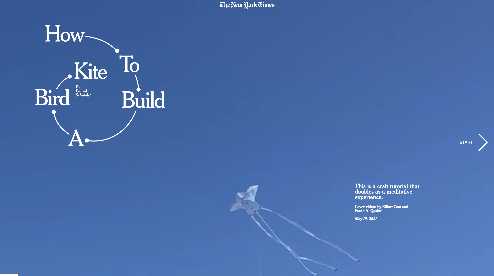
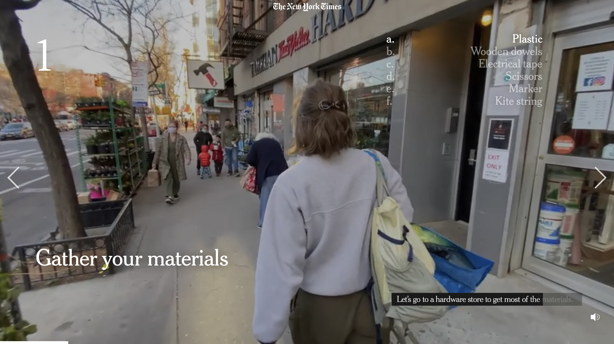

첫 화면
설명
디자인 분석
새 모양 연 만드는 법을 알려주는 사이트이다. 첫 화면에 제목과 파란 하늘에 연이 날아가는 영상이 나오고 시작을 클릭하면 영상과 목소리가 재생된다. 글로 설명이 나오고 목소리로 설명을 읽어주는 소리도 들려서 편리하게 볼 수 있다. 한 사람이 나와 새 모양 연 만들기를 위해 필요한 재료를 사고, 연을 만드는 방법을 순서에 따라 하나하나 알려준다. 알려주기만 하는 것이 아닌 직접 하는 것을 영상으로 보여준다. 어떤 재료를 사야 하는지 등 하나의 챕터마다 매우 세부적으로 설명해 줘서 사이트를 만든 이유인 새 모양 연 만드는 법을 잘 따라 할 수 있다.
돌아가기